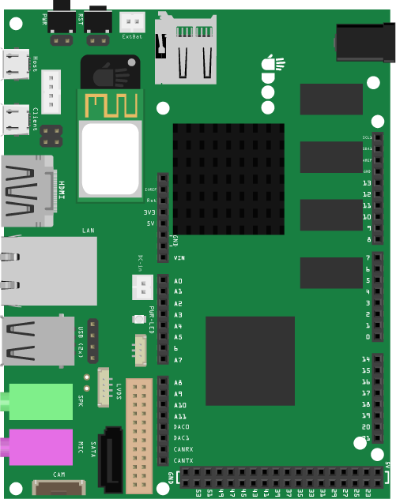
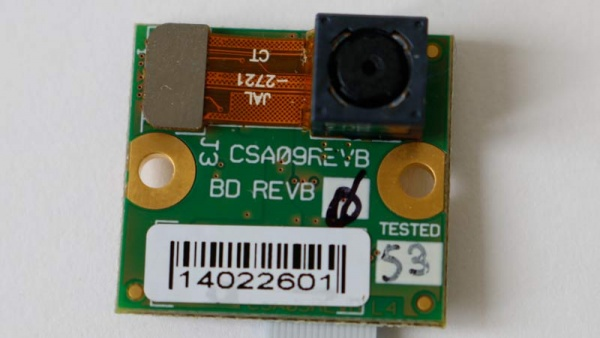
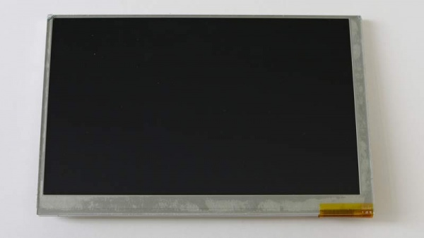
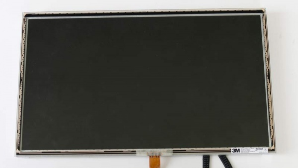

UDOO Quad/Dual Documentation
UDOO Quad/Dual Documentation
Introduction
UDOO DUAL/QUAD
UDOO DUAL/QUAD is a single board computer that can run Android or Linux OS, and also features an Arduino-compatible microcontroller embedded onboard. It is a powerful prototyping board for software development and design. Easy to use, it allows to develop projects with minimum knowledge of hardware design. UDOO DUAL/QUAD merges different computing worlds together: each one has its proper strengths and weak points, but all of them are useful in todays life for educational purposes as well as Do-It-Yourself (DIY) and quick prototyping. UDOO DUAL/QUAD is an open hardware, low-cost platform equipped with an ARM i.MX6 NXP® processor, and an Arduino Due compatible section based on ATMEL SAM3X8E ARM processor, all this available on the same board!
UDOO DUAL/QUAD Goals:
- Develop an innovative product for a growing market
- Give a new vision to the educational framework, with the idea of training up a new generation of engineers, designers and software developers skilled in digital technology: physical computing, multi-media arts, interactive arts, IoT...
- Give a boost to the DIY world
- Offer a low cost embedded platform for interactive arts with powerful tools: Processing, OpenCV, PureData, openFramework
- Provide companies with a great tool for fast prototyping
Specifications

UDOO DUAL/QUAD retail line up consists of three models, sharing most of the features and different only for connectivity and i.MX6 processor used. All three models feature an embedded Arduino compatible section based on Arduino Due schematic. UDOO DUAL/QUAD’s dimensions are: 4.33 inch x 3.35 inch (11 cm x 8.5 cm).
- NXP® i.MX6Quad, 2\4 x ARM® Cortex™-A9 core @ 1GHz with ARMv7A instruction set
- GPU Vivante GC 2000 for 3D + Vivante GC 355 for 2D (vector graphics) + Vivante GC 320 for 2D
- Atmel SAM3X8E ARM Cortex-M3 CPU (same as Arduino Due)
- RAM DDR3 1GB
- 76 fully available GPIO with Arduino compatible R3 1.0 pinout
- HDMI and LVDS + Touch
- 2 Micro USB (1 OTG)
- 2 USB 2.0 type A and 1 USB 2.0 internal pin header (requires adapter cable)
- Analog Audio and Mic jacks
- CSI Camera Connection
- on board Micro SD card reader (boot device)
- Power Supply (6-15V DC) and External Battery connector
- Gigabit Ethernet RJ45 (10/100/1000 MBit)
- WiFi Module
- SATA connector with power header
Warning: The UDOO DUAL/QUAD I/O pins are 3.3V compliant. Higher voltages (like 5V) would damage the board.
Here you can find a more technical and exhaustive document, the UDOO QUAD/DUAL’s block diagram.
GPIO Features
- 76 fully available GPIO
- Arduino-compatible R3 1.0 pinout
- 3,3 V Compliant
- Compatible with All Arduino Due Shields and most Arduino Shields
- GPIO's can be accessed as Arduino pins, GPIO's or as additional S\PDIF, FlexCAN,I2S, SPI
More information about UDOO DUAL/QUAD_GPIO_Pinout
Official Accessories
UDOO Camera Module

- Auto focus control (AFC) with embedded AF VCM driver
- Sensitivity: 600mV/lux-sec
- Video capture in Full Field of View (FOV): double sensitivity,improved signal-to.noise ratio (SNR)
- Post-binning re-sampling filter for sharper, crisper contours and colours
- Internal anti-shaking engine
- Image transfer rate
VGA (320x480) @120fps VGA (640x480) @90fps 720p @60fps 1280x960 @45fps 1080p @30fps QSXGA (2592x1944) @15fps
More informations about UDOO Camera Modules
UDOO LVDS Touch Screens
7" Touch Panel Kit
- 7" TFT RGB Display
- I2C Touch Screen
- Dual Touch
- Resolution 800X480
- UDOO_VK-7T video cable for UDOO
- LCD BOARD ADAPTER
UDOO 7" Touch Panel Display Kit Datasheet
15" Touch Panel Kit
- 15,6" LVDS Display
- USB Capacitive Touch Screen
- Resolution 1366X768 24bit
- UDOO_VK-15T video cable for UDOO
- USB CABLE for Third UDOO'USB
- Touch Controller Board
UDOO 15" Touch Panel Display Kit Datasheet
Community
- Official web site www.udoo.org
- Official forum www.udoo.org/forum
Forums
The official UDOO forums can be found at www.udoo.org/forum
The forum search facility has been tweaked to allow more general searching. Please do a search before making a post as the issue may already have been raised and answered.
IRC channel
There is an (unofficial) UDOO discussion channel on IRC. Using the IRC client of your choice, use server information: irc.freenode.net. Room name is #udoo.